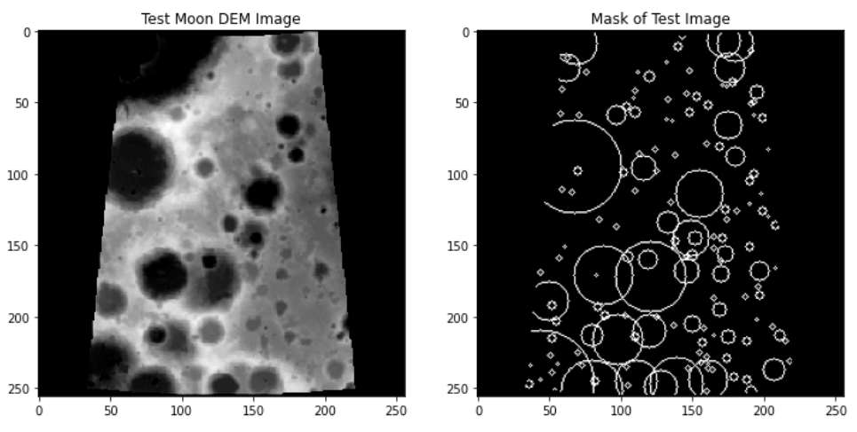

A digital elevation model is a specialized database that represents the relief of a surface between points of known elevation.
The DEM that we used to create our input data is the Lunar Reconnaisance Orbiter (LRO) and Kaguya merged digital elevation model (original), which spans ±60 degrees in latitude (and the full range in longitude) and has a resolution of 59m/pixel. It is a massive (90000×30000 pixels) greyscale image in which the depressions on the lunar surface are represented by darker pixels, while regions closer to the surface are reprsented by lighter pixels.
The input data was derived from the DEM in 3 main steps :
The labels (i.e ground truth images) were generated using the most popular (human made) lunar crater catalog (link) as follows :
Initially we attempted to generate the data by ourselves, but the global dem was too large to handle on our systems. Credit to Silburt et al [1] for making their randomly generated input data and target masks publicly available here (approximately 10GB). Here is a sample input DEM, target pair:
Having the input image and target pairs simplifies a difficult task like crater detection into a supervised learning problem as we can now see that each input image is essentially a datapoint and each target is a label. Going a step further, the problem, when seen at the level of a pixel is actually just a binary classification problem because, the aim is to classify each pixel on a test image as a lying on a crater or not lying on a crater. The more common phrase for pixel level classification is, image segmentation .
The U-Net is a Convolutional Neural Network architecture that is specifically used for image segmentation tasks. It takes images as input and outputs images of the same size in which each pixel is classified to a particular class. This is its architecture, and the reason it is called U-Net:

References:
For the results of our implementation : Ipython uploaded in GitHub
Sample Test Image and Output from our U-Net :

Few concessions and changes in our implementation of the U-Net :
These changes had to be made because of the limited computational resources at our disposal. Even by training on only 5000 images for just 5 epochs, the network took over 2 hours to train.
Credit to Group 17 (Nishant and Rion) for sharing this idea with us. Our datasets are similar, so we tried one of their baselines on our data.
Reference Video : segmentation with traditional ml models
The implementation: Only 3 images(?!) were used in training. The 3 256 × 256 pixel dem images were broken down so that each pixel represented a datapoint and the corresponding targets were broken down, so that each target pixel represents a label. Various other features were also extracted by convolving the images with kernels like Gabor,Scharr and Sobel edge detctors. The data was then passed through a random forest classifier that tried to predict whether a given pixel from a DEM image was lying on a crater or not.
Code, uploaded as Ipython in GitHub.
Output from our Random Forest:

Clearly it doesn't work as well as the U-Net, but remember that it only trained on 3 images! If you look closely at the rightmost image, you should be able to see that the white pixels kind of resemble the craters that are visible in the middle image.